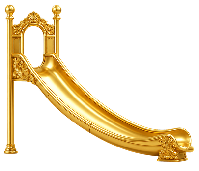

Tools00
Kinds00
Year2026
PriceFree
Kind

Every tool runs in the browser.
Nothing is uploaded and nothing
is stored. Exports are yours.
Filter
No.
Makes
Index
Showing00 / 00
KindAll
OrderNewest
Match—
Order
About
Small single-purpose tools for
making backgrounds, patterns
and posters. Each one exports
vector, image and video.
Type — filter ·
Enter — open first ·
Esc — clear